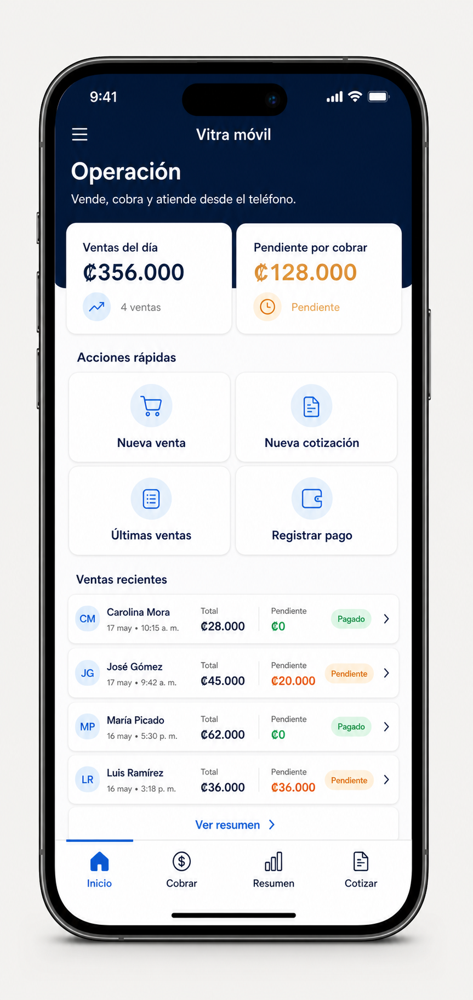
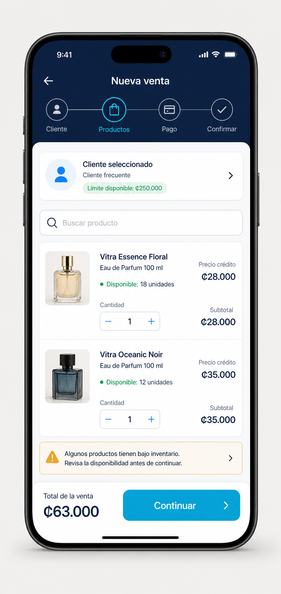
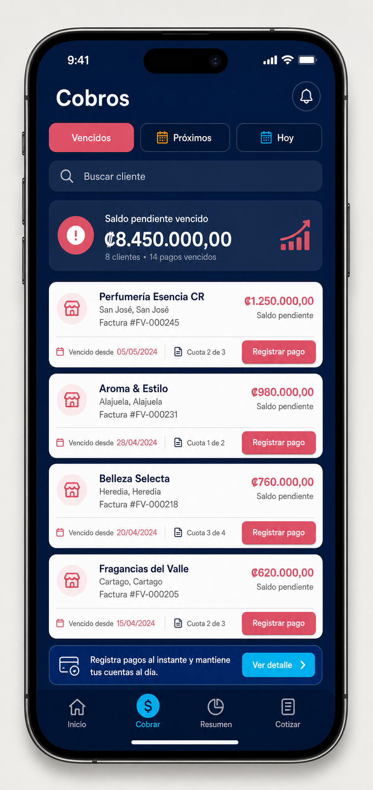

Mockups conceptuales para convertir Vitra Mobile en una herramienta operativa completa para Perfumeland.
La experiencia móvil debe priorizar las tareas de campo y mostrador. La configuración de metadata, layouts y automatizaciones continúa siendo una función de escritorio.
Las tareas más frecuentes quedan a uno o dos toques: vender, cobrar, buscar y compartir.
Total, pagado, pendiente, cuota y estado se muestran antes de confirmar una acción.
Navegación inferior, botones de al menos 44 px y contenido legible desde 360 px.
Costo histórico, idempotencia y validaciones acompañan cada venta desde su creación.
Crear una venta de contado o crédito, registrar el primer pago y enviar el resumen al cliente desde un teléfono.

Ventas recientes y dinero pendiente visibles al abrir la aplicación.
Nueva venta, cotización, resumen y pago sin navegar por objetos técnicos.
Las últimas ventas funcionan como punto de entrada a cobro y atención al cliente.

Cliente, productos, pago y confirmación se convierten en pasos visibles y recuperables.
Disponibilidad, modalidad de precio, cantidad y subtotal aparecen en cada línea.
El total permanece visible y la venta no se escribe hasta la confirmación final.

Separación clara entre vencidos, próximos y pagos del día.
Cada tarjeta lleva directamente al registro del pago con cliente, cuota y saldo ya seleccionados.
Después del pago se actualizan saldo, cuota, resumen e historial.
La experiencia se implementa por entregas pequeñas para validar reglas de negocio antes de ampliar el alcance.
Inicio, búsqueda y bandeja de cobros. El inicio y la navegación ya tienen una primera implementación.
Cliente, productos, precios, crédito, primer pago, confirmación y WhatsApp.
Costo histórico obligatorio o excepción auditada, ganancia, comisiones y anulaciones.
Auditoría, idempotencia, reconciliación y permisos por rol.